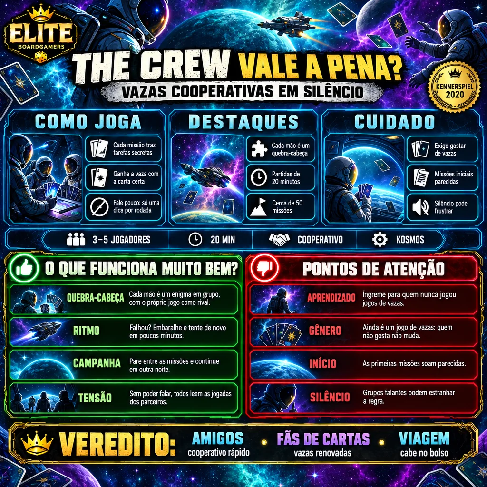

The Crew transformou o velho jogo de vazas em uma campanha cooperativa de 50 missões, jogada quase em silêncio. Venceu o Kennerspiel des Jahres e o Deutscher Spiele Preis em 2020 e o As d'Or Expert em 2021.

| Ano | 2019 |
|---|---|
| Designer | Thomas Sing |
| Editora original | Kosmos |
| Editora no Brasil | não confirmado nas fontes consultadas (título nacional: A Tripulação: Em Busca do Nono Planeta) |
| Jogadores | 3 a 5 (variante para 2) |
| Duração anunciada | 20 minutos |
| Idade | 10+ |
| Nota BGG | 7,7 a 7,8 / 10, conforme a fonte |
| Peso BGG | 1,96 / 5 (fonte única, agregador) |
| Nota Ludopedia | não confirmado nas fontes consultadas |
| Modo solo oficial | Não |
| Missões | 50, com dificuldade crescente |
Nota e peso do BGG obtidos por busca em fontes secundárias. Melhor número de jogadores: 4, segundo uma das fontes.
É um jogo de vazas: cada um joga uma carta, e a maior carta do naipe puxado (ou o maior foguete, que é o trunfo) leva a vaza.
Antes de cada missão, a equipe distribui cartas de tarefa: cada jogador precisa ganhar vazas com cartas específicas. Ninguém pode falar sobre a própria mão.
A única comunicação é mostrar uma carta por missão, indicando se é a maior, a menor ou a única daquele naipe. São 50 missões de dificuldade crescente, jogadas como campanha.
Em vez de vencer vazas, a equipe precisa vencer as vazas certas na hora certa. A Meeples Magazine chama de um dos melhores jogos de vazas que já jogou.
As 50 missões sobem a dificuldade aos poucos e criam a vontade de jogar só mais uma, elogio comum às resenhas consultadas.
Cada missão é rápida, então errar e tentar de novo não cansa.
Só cartas e fichas: fácil de levar para qualquer mesa.
O jogo exige silêncio; a Board Game Review UK nota que comunicar é essencial e mais difícil do que parece. Grupos falantes podem se frustrar.
A variante para 2 existe, mas a Board Game Quest a considerou menos interessante; o ideal é de 3 a 4.
A história espacial aparece no livreto, mas a jogabilidade é puro jogo de vazas.
Por ser um jogo de informação oculta entre jogadores, não há como jogar sozinho.
The Crew pega um formato de séculos e dá a ele um propósito novo: cooperar sem falar. É curto, barato e viciante. Perde força a 2 e exige um grupo disposto a ficar em silêncio, mas é um dos jogos de cartas mais inteligentes da última década.
Silêncio na nave: a vaza certa na hora certa.